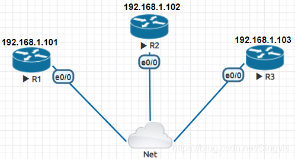
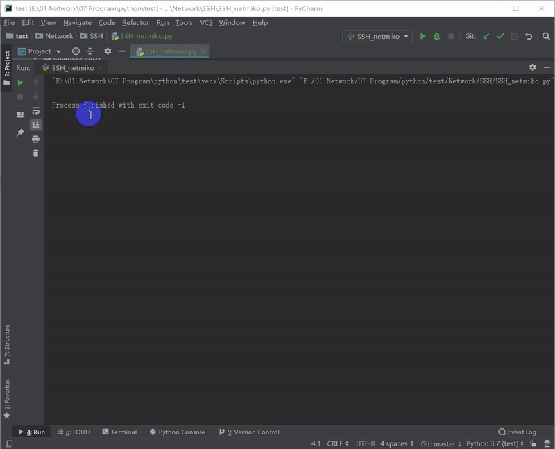
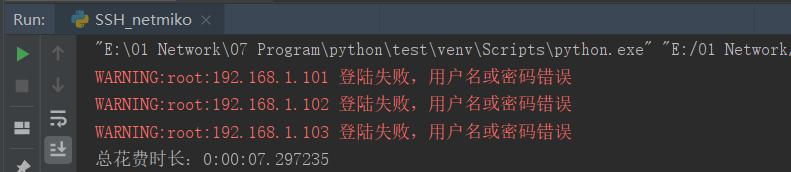

原文出处:本文由博客园博主Singvis提供。
原文连接:https://www.cnblogs.com/singvis/p/11604864.html
原文连接:https://www.cnblogs.com/singvis/p/11604864.html
[ TOC ]
0. 前言
自上一篇文章《用python怎么telnet到网络设备》，简单使用了telnetlib库给大家演示了下，但是，现实环境中仍不建议去使用telnet。
SSH(Secure Shell)协议也是属于TCP/IP协议族里的一种，端口号22，可以代替telnet来远程管理的一种方法。
SSH提供了双向认证、数据加密等方法保证数据的安全性，推荐使用SSHv2版本
1. 测试环境及关键代码解释
1.1 简单测试环境
- 使用python3环境
- 使用第三方Netmiko模块(基于Paramiko库进行改版)
简单的实验环境
1.2 关键代码
import xx：导入模块
class xx：定义类
def xx: 定义函数
try-except ：处理可能引发的异常
ssh.enable()：进入enable模式
ssh.find_prompt()：返回当前提示符
ssh.send_command()：发送查询命令并返回结果
ssh.send_config_set()：发送配置命令到目标设备
ssh.disconnect()：关闭连接
Tips: import ConnectHandler和import Netmiko是一样的效果的哈。
2. 完整代码
'''
欢迎关注微信公众号：'diandijishu'
此平台是网路工程师个人日常技术、项目案例经验分享，
为巩固及提升技术能力乃至共享所学所知技术，
也欢迎各位工程师一起分享、一起成长。
'''
#!/usr/bin/env python
#coding:utf-8
from netmiko import ConnectHandler
from netmiko.ssh_exception import NetMikoTimeoutException
from netmiko.ssh_exception import NetMikoAuthenticationException
from datetime import datetime
import time
import logging
from my_devices import device_list as devices
'定义类'
class SSH_Client():
'定义login_host函数，用于登陆设备'
def login_host(self , a_device):
try:
self.ssh = ConnectHandler(**a_device)
self.ssh.enable()
reply = self.ssh.find_prompt()
print('>' * 10 + '成功登陆结果如下:' + '>' * 10 + '\n' + reply)
return True
except ValueError:
logging.warning(a_device['host'] + ' Secret 密码错误')
except NetMikoTimeoutException:
logging.warning(a_device['host'] + ' 连接不上设备,请检查网络是否正常通信')
except NetMikoAuthenticationException:
logging.warning(a_device['host'] + ' 登陆失败，用户名或密码错误')
'定义do_cmd函数,用于执行命令'
def do_cmd(self,cmds):
'读取文件，for语句循环执行命令'
with open(cmds) as cmd_obj:
for cmd in cmd_obj:
reply = self.ssh.send_command(cmd)
time.sleep(2)
logging.warning('>' * 10 + cmd.rstrip() + ' 命令执行结果如下:' + '>' * 10 + '\n' + reply)
'定义logout_host函数，关闭程序'
def logout_host(self):
self.ssh.disconnect()
if __name__ == '__main__':
cmds = 'cmd.txt' # 存放执行命令文件，相对路径
ssh_client = SSH_Client()
start_time = datetime.now()
for a_device in devices:
'如果登录结果为True，则执行命令，然后退出'
if ssh_client.login_host(a_device):
ssh_client.do_cmd(cmds)
ssh_client.logout_host()
time.sleep(2)
stop_time = datetime.now()
print('总花费时长：{0}\n'.format(stop_time - start_time))
3. 运行效果

4. 报错效果
4.1 远程连接不上

4.2 用户名和密码错误

5. 碎碎语
结合两篇文章，想必大家都知道如何用python使用自带库或第三方库去telnet或ssh网络设备，然而大家可能就会问，如果设备包含多厂商、网络设备telnet和ssh混杂、众多网络设备，那代码又如何去优化呢？的确，要解决一系列问题，咱们得一个一个来哈，也顺便给入门的小伙伴慢慢熟悉下，后面的文章我给大家讲解如何使用多进程和多线程进行优化、完整版网络巡检。
本人代码功夫不深，如有缺陷望指教，多谢。
如果喜欢的我的文章，欢迎关注我的公众号：点滴技术，扫码关注，不定期分享

如果喜欢的我的文章，欢迎关注我的公众号：点滴技术，扫码关注，不定期分享